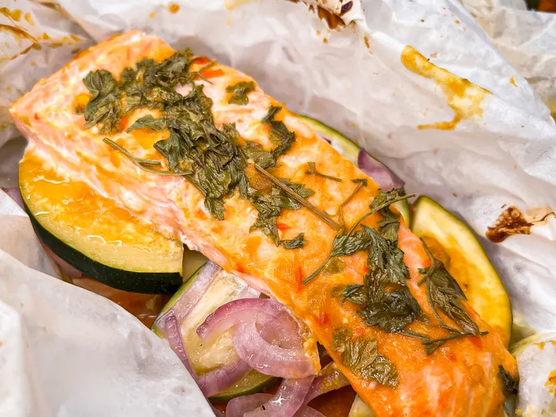

Home / Recipes / Honey Mustard Glazed Salmon
Honey Mustard Glazed Salmon
Made with Byler’s Mild Pepper Mustard, or the Hot Pepper Mustard if you like heat.

Home / Recipes / Honey Mustard Glazed Salmon
Made with Byler’s Mild Pepper Mustard, or the Hot Pepper Mustard if you like heat.
